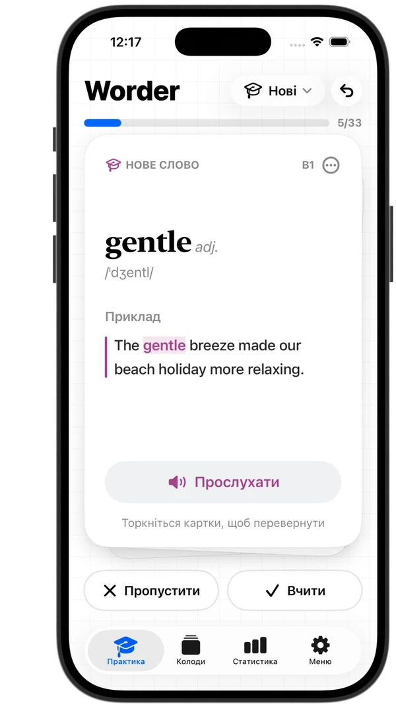

Вчи англійські слова з картками
Worder — застосунок для вивчення слів на iPhone. Запам’ятовуй лексику з інтервальним повторенням, створюй колоди зі ШІ та повторюй слова з віджетом на екрані блокування.

* Перше місце в категорії «Освіта» в App Store у серпні.
Чому саме цей застосунок?
-
Інтервальне повторення
Власний алгоритм на основі машинного навчання визначає найкращий момент для повторення кожного слова, щоб ти запам’ятовував його ефективніше й надовго.
-
Картки та інтерактивні вправи
Вчи слова з картками та слухай вимову. Проходь вправи: обирай правильний переклад, заповнюй пропуски й вводь слова з клавіатури.
-
Віджет для вивчення слів
Додай слова на екран блокування iPhone. Віджет Worder допоможе повторювати лексику протягом дня, не відкриваючи застосунок.
-
Колоди слів зі ШІ
Додавай слова за описом, із фото або іншого файлу. Штучний інтелект допоможе зібрати їх у колоду карток для вивчення.
Що кажуть користувачі
-
«Чудова програма, яка дуже забустить вивчення мови!»
Yehor1
-
«Дуже крутий застосунок! Ідея реально варта уваги 🥹»
Богдана Мазур
-
«Якщо ви у пошуку додатку для повторення, практики розмовної англійської та звичайного вивчення слів, то я раджу. Немає реклами, інтерфейс чудовий, зрозумілий, не навантажує. Загалом все влаштовує, я задоволена.»
Soltanovska Polina
-
«Перепробував багато подібних застосунків, але цей сподобався найбільше. Зручно, що можна швидко додавати й повторювати слова без зайвих налаштувань.»
Slava-2000An
Залишилися питання?
Які мови можна вивчати у Worder?
Англійську, іспанську, німецьку, французьку та японську. Для англійської є готові колоди за рівнями. Для будь-якої з цих мов можна створювати власні колоди — вручну або за допомогою ШІ.
Чи можна користуватися Worder безкоштовно?
Так. Без підписки можна вчити до 15 нових слів на день, повторювати вивчене й додавати власні картки. Також доступні дві пробні генерації колод зі ШІ.
Які можливості дає Worder Premium?
З Premium можна вчити до 50 нових слів на день, створювати більше колод зі ШІ та скасовувати випадкові свайпи без обмежень. Підписка також відкриває всі стилі віджета й якісніші голоси озвучення.
На яких платформах доступний Worder?
Worder створений для iPhone з iOS 26 або новішою. На Mac із чипом Apple M1 або новішим та Apple Vision Pro застосунок працює в режимі сумісності.
Як створити власні картки зі словами?
Відкрий колоду, натисни «Додати слово» та введи слово й переклад. Або створи колоду зі ШІ: опиши тему, додай фото чи файл — Worder підготує картки.
Як поділитися колодою слів?
У меню колоди вибери «Експортувати JSON» і надішли файл іншій людині. Щоб додати ці слова у свій Worder, їй потрібно вибрати «Імпортувати JSON» і відкрити отриманий файл.
Почни з першого слова
Завантаж Worder на iPhone або спробуй картки просто в браузері.